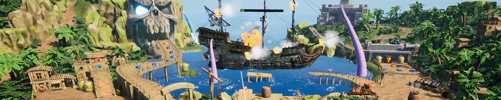

Plunder Ball
Roles:
C++ Programming, Unreal 5 Blueprints

Shopping between rounds

Achieving High Scores

Pinball Action Gameplay

Plunder Ball was a year-long endeavour with a fluctuating team of 3-10 people in Unreal Engine 5.
Dalton's main role was initially producing. Additionally, at the end of production, Dalton was working in Unreal Engine 5, in both C++ and blueprints, to address a number of unshippable and unpalatable bugs before release. At the end of development, Dalton handled the process of integrating the Steamworks API in Unreal Engine 5 and the process of publishing on Steam.